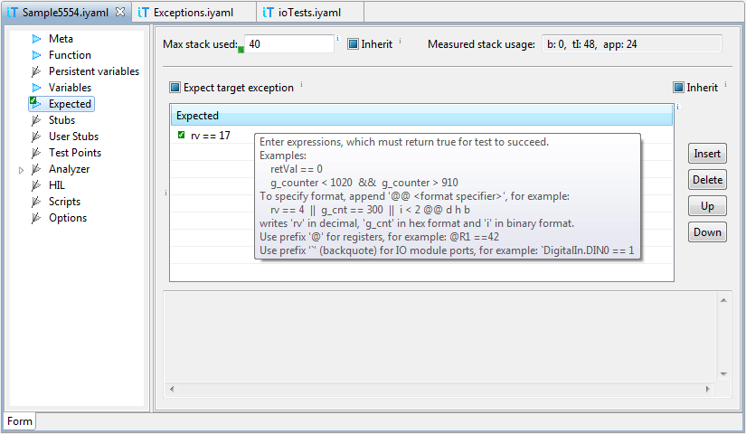

Overview
Test cases in iSYSTEM testIDEA can be created without
writing a single line of code. Test case needs to specify the
following information:
- Initial values of variables
- What to test (for example a function name)
- Expected results
In addition to this, the following information can also be added:
- Test meta information (id, description, tags)
- System configuration
- Stubs and test points
- What to measure (coverage, profiler, and trace)
- Script extensions
The main purpose of iSYSTEM testIDEA is to hide test case
specification syntax behind a user friendly user
interface. Knowing the syntax is not required for using
iSYSTEM testIDEA. However, if you'd like to know more about
iSYSTEM tests, the syntax specification is available at
isystem.test
API page.
To minimize the need for accessing this help, all input controlls
in testIDEA have descriptive tooltips attached. Simply move mouse
cursor over the control, and wait for few moments until a
tooltip appears.
